임상심리사-2급 (2016-08-21 기출문제)
1과목: 심리학개론
1. Janis의 집단사고의 원인이 아닌 것은?
- 강한 응집성
- 성급한 만장일치 촉구
- 판단에 대한 과도한 확신
- 구성원의 낮은 지적 수준
(정답률: 81%)

2. 마리화나가 기억에 미치는 영향을 알아보기 위한 실험에서 선행조건인 마리화나의 양은 어떤 변수에 해당하는가?
- 독립변수
- 종속변수
- 가외변수
- 외생변수
(정답률: 87%)
3. Erikson의 심리사회적 발달이론이나 단계에 관한 설명으로 가장 적합한 것은?
- 성인 초기의 심리사회적 위기는 생산성과 침체감이다.
- Erikson이 주장한 8단계 중 앞의 몇 단계는 아동초기에 나타나며 Freud의 구강기, 항문기 및 남근기와 어느 정도 상응하는 측면이 있다.
- 인간의 성격발달은 아동기 이후에는 멈춘다.
- 6세 ~ 사춘기에는 자아와 환경에 대한 기본적 통제를 획득해야하는 발달과제를 안고 있는 시기이다.
(정답률: 81%)
4. 다음은 무엇에 관한 설명인가?
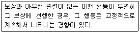
- 자극일반화
- 도피행동
- 미신행동
- scallop 현상
(정답률: 78%)
5. 성격에 대해 정의내릴 때 고려하는 특징와 가장 거리가 먼 것은?
- 시간적 일관성
- 환경에 대한 적응성
- 개인의 독특성
- 개인의 자율성
(정답률: 57%)
6. 자극추구동기에 관한 설명으로 틀린 것은?
- 인간만이 이 동기를 가지고 있는 것은 아니다.
- 이 동기 수준이 높은 청소년은 비행을 저지를 가능성이 높은 경향이 있다.
- 이 동기는 사회적 동기로 분류할 수 있다.
- 이 동기의 결핍은 인간의 인지적 측면에도 부정적인 영향을 미친다.
(정답률: 70%)
7. 다음 중 성격이 다른 학습은?
- 연합학습
- 통찰학습
- 잠재학습
- 모방학습
(정답률: 53%)
8. 집중경향치에 관한 설명으로 틀린 것은?
- 일반적으로 집중경향치에는 평균치, 중앙치, 최빈치가 있다.
- 최빈치는 분포 중 가장 많은 대다수를 표현한다.
- 대칭적 분포에서는 평균치와 중앙치가 동일하다.
- 편포된 분포에서 집중경향치를 선택할 때 어떤 집중경향치를 선택해도 똑같은 의미를 지닌다.
(정답률: 76%)
9. 다음 중 훈련받은 행동이 빨리 습득되고 높은 비율로 오래 유지되는 강화계획은?
- 고정비율계획
- 고정간격계획
- 변화비율계획
- 변화간격계획
(정답률: 75%)
10. 다음의 정서 경험을 설명하는 이론은?
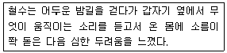
- James-Lange 이론
- Schachter 이론
- Cannon-bard 이론
- Lazarus 이론
(정답률: 64%)
11. 심리검사가 측정하고자 하는 내용이나 속성을 실제 얼마나 잘 측정하는지를 나타내는 개념은?
- 표준화
- 난이도
- 타당도
- 신뢰도
(정답률: 89%)
12. Freud의 심리성적 발달 이론에 관한 설명으로 옳은 것은?
- 초기경험이 성격발달에 중요하다.
- 성격은 9 단계에 따라 발달한다.
- 성격은 전 생애를 통해 발달한다.
- 성격발달의 사회문화적 요인을 강조한다.
(정답률: 85%)
13. 자신의 행동을 통해서 태도를 확인하고 이해하는 과정을 설명하는 이론은?
- 인지부조화이론
- 자기지각이론
- 자기고양편파이론
- 자기정체성이론
(정답률: 77%)
14. 연구자가 검사의 예측능력에 관심이 있을 때 가장 고려해야 하는 타당도의 유형은?
- 내용 타당도
- 안면 타당도
- 준거 타당도
- 구성 타당도
(정답률: 68%)
15. 자유 회상 실험을 통해 얻은 계열 위치 곡선의 시사점과 가장 거리가 먼 것은?
- 최신(신근) 효과
- 초두 효과
- 장기기억의 지속 시간
- 단기기억과 장기기억의 이중적 기억 체계
(정답률: 55%)
16. 귀인의 대응추리이론과 가장 거리가 먼 것은?
- 사회적 바람직성
- 비공통효과
- 일관성, 일치성, 독특성
- 기본적 귀인 오류
(정답률: 46%)
17. 대인지각에서 첫인상의 중요성을 설명하는 효과로 부적합한 것은?
- 맥락효과
- 중요성절감효과
- 주의감소효과
- 신근성효과
(정답률: 55%)
18. 사회학습이론에 입각한 성격에 관한 설명으로 옳은 것은?
- 사회학습이론에서는 성격이 인지과정이나 동기에 의한 영향을 인정하지 않는다.
- 사회학습이론에서는 관찰학습과 모델링을 통해서 보상받은 행동을 대리적으로 학습한다고 한다.
- 사회학습이론에서는 행동에 대한 환경적 변인의 독립적인 영향을 강조한다.
- Bandura는 개인이 자신의 노력으로 원하는 결과를 얻을 수 있다는 신념이나 기대를 자기존중감(self-esteem)이라고 하였다.
(정답률: 74%)
19. 다음 ( )안에 들어갈 가장 알맞은 것은?
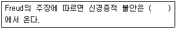
- 환경에 있는 실제적 위협
- 환경내의 어느 일부를 과장해서 해석함
- Id의 충동과 Ego의 억제 사이의 무의식적 갈등
- 그 사회의 기준에 맞추어 생활하지 못함
(정답률: 88%)
20. 정신역동적 관점의 학자들과 그 설명이 틀린 것은?
- Freud는 정신결정론과 무의식적 동기를 강조한다.
- Jung은 집단무의식의 중요한 구성요소를 원형이라 가정한다.
- Adler는 생물학적 측면보다는 사회적 요인이 성격에 미치는 영향을 강조한다.
- Sullivan은 3가지 성격요소 중 어느 한 요소가 지배적이고 다른 두 요소가 조화를 이룰때 문제가 발생한다고 가정한다.
(정답률: 76%)
2과목: 이상심리학
21. 다음 장애 중 성기능부전에 포함되지 않은 것은?
- 사정지연
- 발기장애
- 마찰도착장애
- 여성극치감장애
(정답률: 73%)
22. 알콜중독과 가장 관련이 깊은 정신장애들만으로 짝지은 것은?
- 치매, 공포장애, 우울장애
- 치매, 허위성장애, 해리성 기억상실증
- 우울장애, 성격장애, 조현병
- 성격장애, 적응장애, 신체형장애
(정답률: 52%)
23. 다음 보기에서 이 환자의 감별진단이 필요한 정신과적 진단들로 알맞은 것은?
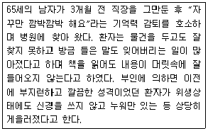
- 섬망, 우울증
- 치매, 우울증
- 섬망, 치매
- 치매, 스트레스 장애
(정답률: 72%)
24. 강박장애의 설명으로 옳은 것은?
- 강박관념은 환자 스스로에게 자아-동조적(ego-syntonic)이다.
- 강박장애 환자의 사고, 충동, 심상은 실생활 문제를 단순히 지나치게 걱정하는 것이다.
- 강박장애 환자는 강박적인 사고, 충동, 심상이 개인이나 개인 자신의 정신적 산물임을 인정한다.
- 강박장애 환자는 자신의 강박적 사고나 강박적 행동이 지나치거나 비합리적임을 인식하지 못한다.
(정답률: 60%)
25. 우울증의 임상양상과 원인 등의 양분된 차원으로 틀린 것은?
- 조발성 우울과 만발성 우울
- 정신병적 우울과 신경증적 우울
- 내인성 우울과 반응성 우울
- 지체성 우울과 초조성 우울
(정답률: 51%)
26. 성격장애에 관한 설명으로 틀린 것은?
- DSM-5에서 10가지 성격장애로 구분된다.
- 고정된 행동 양식이 사회적, 직업적, 그리고 다른 중요 영역에서 임상적으로 심각한 고통이나 기능장애를 초래해야 한다.
- 개인의 지속적인 내적 경험과 행동양식이 그가 속한 사회의 문화적 기대에서 심하게 벗어나야 한다.
- 발병 시기는 성인기 이후여야 한다.
(정답률: 78%)
27. DSM-5에 근거한 주요 우울증 일화의 준거가 아닌 것은?
- 사고의 비약
- 정신운동성 지체
- 자기비하
- 주의집중장애
(정답률: 65%)
28. 다음에서 설명하고 있는 것은?
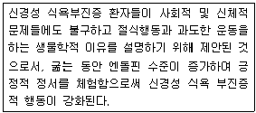
- 상호억제원리
- Premack의 원리
- 신해리이론
- 자가중독이론
(정답률: 67%)
29. 조현병에서 보이는 증상에 관한 설명으로 틀린 것은?
- 망상(delusion) - 자신과 세상에 대한 잘못된 강한 믿음이고, 외부세계에 대한 잘못된 추론에 근거한 그럿된 신념
- 환각(hallucination) - 외부 자극이 없음에도 불구하고 어떤 소리나 형상을 지각하거나 외부자극에 대해서 현저하게 왜곡된 지각을 하는 경우
- 와해된 언어(disorganized speech) - 언어적 표현 소멸
- 긴장성 운동행동(catatonic behavior) - 마치 근육이 굳은 것처럼 어떤 특정한 자세를 유지하는 경우
(정답률: 69%)
30. 지적장애(intellectual disability)의 진단적 특징으로 틀린 것은?
- 임상적 평가와 개별적으로 실시된 표준화된 지능 검사로 확인된 지적기능의 결함이다.
- 적응기능의 결함으로 인해 독립성과 사회적 책임의식에 필요한 발달학적 사회문화적 표준을 충족하지 못한다.
- 20세 이전에 발병한다.
- 지적 결함과 적응기능의 결함은 발달시기동안에 시작된다.
(정답률: 62%)
31. 조현병의 양성 증상에 관한 설명으로 틀린 것은?
- 정상적인 기능의 왜곡 또는 과잉을 의미한다.
- 대표적으로 망상이나 환각을 들 수 있다.
- 동기와 즐거움의 상실 등이 여기에 속한다.
- 혼란된 행동과 기괴한 행동이 여기에 속한다.
(정답률: 85%)
32. 병적 도벽에 관한 설명으로 틀린 것은?
- 개인적으로 쓸모가 없거나 금전적으로 가치가 없는 물건을 훔치려는 충동을 저지하는데 반복적으로 실패한다.
- 훔치기 전에 고조되는 긴장감을 경험한다.
- 훔친 후에 기쁨, 충족감, 안도감을 느낀다.
- 분노나 복수를 하기 위해서 훔친다.
(정답률: 85%)
33. 행동주의적 입장에서 보는 이상행동으로 틀린 것은?
- 비정상적인 성격발달도 유전적 소인과 경험간 상호작용의 결과로 본다.
- 우울증은 부분적으로는 행동이 더 이상 보상을 받지 못하는 소거의 결과로 본다.
- 행동주의자들은 진단범주에 따라 환자들을 명명하는 것에 회의적이다.
- 행동주의자들은 모든 심리적 이상이 오로지 학습되었다고 본다.
(정답률: 57%)
34. Freud가 정신분석이론을 발전시키는 초기 과정에서 많은 관심을 지녔던 것으로 알려져 있으며, Anna O의 사례와 밀접한 관련이 있는 정신장애는?
- 경계선 성격장애
- 전환장애
- 건강염려증
- 특정 공포증
(정답률: 67%)
35. 다음 환자가 포함될 진단범주로 가장 가능성이 높은 것은?
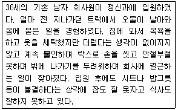
- 사회공포증
- 강박장애
- 강박성 성격장애
- 망상장애
(정답률: 77%)
36. 공황장애의 특징을 모두 고른 것은?
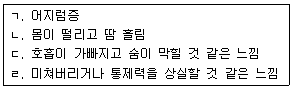
- ㄱ, ㄴ, ㄷ
- ㄷ, ㄹ
- ㄱ, ㄴ, ㄹ
- ㄱ, ㄴ, ㄷ, ㄹ
(정답률: 83%)
37. 양극성 장애에 대한 설명으로 틀린 것은?
- 조증 상태에서는 사고의 비약 등의 사고장애가 나타난다.
- 우울증 상태에서는 자살을 시도하기도 한다.
- 조증은 서서히, 우울증은 급격히 나타난다.
- 조증과 우울증이 반복되는 장애이다.
(정답률: 84%)
38. 다음 이상행동의 원인을 다음과 같이 설명하는 이론은?
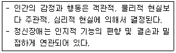
- 정신분석이론
- 행동주의 이론
- 인지적 이론
- 인본주의 이론
(정답률: 77%)
39. 지적장애(intellectual disability) 진단과 관련된 세 가지 영역에 해당되지 않는 것은?
- 개념적 영역(conceptual domain)
- 사회적 영역(social domain)
- 발달적 영역(developmental domain)
- 실행적 영역(practical domain)
(정답률: 39%)
40. 정신분석학적 관점에서 볼 때 해리성 장애 환자들에게서 가장 흔히 나타나는 방어기제는?
- 억압
- 반동형성
- 전치
- 주지화
(정답률: 71%)
3과목: 심리검사
41. 직업선호도검사(VPT)의 코드유형 중 다음은 어느 유형에 대한 설명인가?
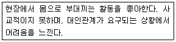
- 현실형(R)
- 탐구형(I)
- 관습형(C)
- 진취형(E)
(정답률: 74%)
42. 아동을 대상으로 집-나무-사람 그림검사를 실시할 때 그 실시 방법으로 옳은 것은?
- 아동의 보호자가 옆에서 지켜보면서 격려하도록 한다.
- 집, 나무, 사람은 각각 별도의 용지를 사용하여 실시한다.
- 그림을 그린 다음에는 수정하지 못하게 한다.
- 그림이 완성된 후 보호자에게 사후 질문을 하는 것이 일반적이다.
(정답률: 83%)
43. MMPI-2 코드 쌍의 해석적 의미로 틀린 것은?
- 4-9 : 행동화적 경향이 높다.
- 1-2 : 다양한 신체적 증상에 대한 호소와 염려를 보인다.
- 2-6 : 전환증상을 나타낼 경우가 많다.
- 3-8 : 사고가 본질적으로 망상적일 수 있다.
(정답률: 75%)
44. 표준점수에 관한 설명으로 틀린 것은?
- 대표적인 표준점수로는 Z점수가 있다.
- 표준점수는 원점수를 직선변환하여 얻는다.
- 웩슬러지능검사의 IQ 수지도 일종의 표준점수이다.
- Z점수가 0점이라는 것은, 그 사례가 해당 집단의 평균치보다 1표준편차 위에 있다는 것을 의미한다.
(정답률: 70%)
45. 전두엽의 집행기능(Executive function)을 평가하기 위한 신경심리 검사와 가장 거리가 먼 것은?
- 위스컨신 카드분류검사(WCST)
- 하노이탑 검사(Tower of Hanoi test)
- 보스턴 이름대기 검사(Boston Naming test)
- 스트룹 검사(Stroop test)
(정답률: 58%)
46. 초등학교 학생의 성취도를 알아보기 위하여 평가를 실시하고자 한다. 성취도 검사의 범주에 포함되지 않는 것은?
- 독해검사
- 쓰기검사
- 산수검사
- 지능검사
(정답률: 73%)
47. 진로발달검사(CDI)의 하위척도에 포함되지 않는 것은?
- 진로계획(CP)
- 진로탐색(CE)
- 의사결정(DM)
- 경력개발(CD)
(정답률: 70%)
48. MMPI-2를 해석하는데 있어서 수검자의 검사태도 및 프로파일의 타당도를 알아보기 위해 고려해야 할 사항과 가장 거리가 먼 것은?
- 검사 수행에 걸린 시간
- 무응답의 개수
- F척도의 상승도
- 6번 척도의 변화폭
(정답률: 80%)
49. 표준화 검사의 특징과 가장 거리가 먼 것은?
- 검사 실시의 절차가 엄격히 통제된다.
- 모든 표준화 검사는 규준을 갖고 있다.
- 반응의 자유도를 최대한으로 넓힌다.
- 두 가지 이상의 동등형을 만들어 활용한다.
(정답률: 75%)
50. 지능검사를 집단으로 실시하는 경우에 관한 설명으로 틀린 것은?
- 전산화 심리검사로 개발되어 사용될 수 있다.
- 검사실시자의 훈련이 쉽다.
- 개인의 특수한 행동에 관한 정보를 수집하기 쉽다.
- 수검자의 일시적인 상태를 충분히 고려하지 못한다.
(정답률: 70%)
51. MMPI-2의 타당성 척도에 대한 해석으로 틀린 것은?(문제 오류로 가답안 발표시 3번으로 발표되었지만 확정답안 발표시 2, 3번이 정답 처리 되었습니다. 여기서는 가답안인 3번을 누르면 정답 처리 됩니다.)
- 무반응(?) 점수가 100 이상일 때는 채점에서 제외시킨다.
- 방어성 척도 중 L 점수가 높으면 사소한 결점이나 약점을 인정하는 태도를 보인다.
- 비전형 척도 중 F 점수는 보통사람들과는 다른 생각(예, 정신병을 가진 사람), 이상한 태도, 이상한 경험을 가진 사람에게서 낮아지는 경향이 있다.
- 방어성 척도 중 K 점수가 낮으면 방어적 태도가 낮아져 과도하게 솔직하고 자기 비판적 임을 나타낸다.
(정답률: 64%)
52. 아동의 지적 발달이 또래 집단에 비해 지체되어 있는지, 혹은 앞서고 있는지를 평가하기 위해, Stern이 사용한 IQ산출계산방식은?
- 지능지수(IQ) = [정신연령/신체연령] × 100
- 지능지수(IQ) = [정신연령/신체연령] + 100
- 지능지수(IQ) = [신체연령/정신연령] × 100
- 지능지수(IQ) = [신체연령/정신연령] ÷ 100
(정답률: 74%)
53. 웩슬러지능검사로 평가할 수 있는 지능의 영역과 가장 거리가 먼 것은?
- 추상적 사고능력
- 예술적 능력
- 공간적 추론능력
- 주의집중력
(정답률: 85%)
54. 지능의 측정 영역 중 일반적으로 연령이 증가함에 따라 가장 크게 저하되는 것은?
- 귀납적 추리 능력
- 공간위치파악능력
- 수리능력, 지각속도
- 언어능력, 언어기억
(정답률: 74%)
55. BGT검사 실시에 관한 설명으로 틀린 것은?
- 카드는 보이지 않게 엎어두고 도형 A부터 도형 8까지 차례로 제시한다.
- 카드에 제시된 도형 크기가 같게 그리게 한다.
- 모사용지는 수검자가 원하는 만큼 사용하게 한다.
- 수검자의 검사태도, 검사 행동을 잘 관찰한다.
(정답률: 72%)
56. 심리검사를 위한 면담에서 임상심리사가 유의해야 할 점과 가장 거리가 먼 것은?
- 수검자의 부적응 행동의 과거력을 잘 물어봐야 한다.
- 면담은 되도록 간단하게 진행해서 빨리 끝내야 한다.
- 평가 목적(의뢰 사유)을 정확히 파악하고 이에 대한 답을 찾도록 해야 한다.
- 수검자와 의사소통 관계(라포)를 잘 형성한 후 물어보아야 한다.
(정답률: 82%)
57. MMPI-2의 각 척도에 대한 해석으로 가장 적합한 것은?
- 1번 척도는 다양하고 모호한 신체적 임상 증상과 연관성이 높다.
- 2번 척도는 반응성 우울증 보다는 내인성 우울증과 관련이 높다.
- 4번 척도의 상승 시 심리치료 동기가 높고 치료의 예후가 좋음을 나타낸다.
- 7번 척도는 불안 가운데 상태불안 증상과 연관성이 높다.
(정답률: 63%)
58. 뇌기능이론에 관한 설명으로 틀린 것은?
- 국재화(localization)는 어떤 인지기술이 뇌의 특정 영역에 자리잡고 있다는 것이다.
- 등력성주의(equipotentialism)는 뇌영역이 한 가지 이상의 기능을 수행한다고 주장한다.
- 뇌 손상 후에 나타나는 부분적인 기능회복은 등력성의 지지증거이다.
- 뇌 손상 후에 나타나는 부분적인 기능회복은 국재화의 지지증거이다.
(정답률: 58%)
59. 심리검사의 제작에 관한 설명으로 가장 거리가 먼 것은?
- 평균이 지나치게 한쪽으로 몰려 있거나 분산이 작은 경우는 정보가가 낮아 좋은 문항이라고 하기 어렵다.
- 문항의 난이도가 높아질수록 개인의 능력을 변별할 수 있는 가능성이 늘어난다.
- 오답을 정답으로 잘못 선택하는 확률은 각 오답 선택지별로 동질적인 것이 좋다.
- 검사 점수의 변량이 작으면 검사의 신뢰도나 타당도는 낮아질 가능성이 크다.
(정답률: 63%)
60. 아동용 지각-운동통합의 발달검사로, 24개의 기하학적 형태의 도형으로 이루어진 지필검사는?
- VMI
- BGT
- CPT
- CBCL
(정답률: 63%)
4과목: 임상심리학
61. 다음에서 설명하고 있는 것은?
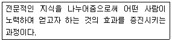
- 자조
- 평가
- 자문
- 개입
(정답률: 81%)
62. 행동평가 방법에 관한 설명으로 틀린 것은?
- 자연관찰은 참여자가 아닌 관찰자가 환경 내에서 일어나는 참여자의 행동을 관찰하고 기록하는 방법이다.
- 유사관찰은 제한이 없는 환경에서 관찰하는 방법이다.
- 참여관찰은 관찰하고자 하는 개인이 자연스러운 환경에 관여하면서 기록하는 방식이다.
- 자기관찰은 자신이 개인과 환경간의 상호작용에 관한 자료를 수집하도록 한다.
(정답률: 75%)
63. 임상심리사의 윤리에 어긋나는 행위는?
- 본인이 맡고 있는 상담사례에 대해 지도를 받기 위하여 지도감독자에게 상담의 내용을 설명한다.
- 내담자의 동의 없이 인적 사항을 포함한 상세한 상담 내용을 잡지에 기고한다.
- 부모의 동의하에 아동의 지능 검사 결과를 교사에게 알려준다.
- 자살과 같은 위급한 상황에서 본인의 동의를 받지 못한 채 부모나 경찰에게 연락한다.
(정답률: 82%)
64. 인간 마음의 요소적 구조를 탐색하기 위하여 내성법을 사용하였던 초기 심리학과는?
- 구조주의
- 기능주의
- 행동주의
- 인본주의
(정답률: 67%)
65. Rorschach 검사의 모든 반응이 형태를 근거로한 단조로운 반응이고, MMPI에서 8번척도가 65T 이상으로 유의하게 상승되어 있는 내담자에 대한 설명으로 가장 적합한 것은?
- 우울한 기분, 무기력한 증상이 나타날 가능성이 크다.
- 망상, 환각이 나타나고 판단력이 저하되어 있을 가능성이 있다.
- 타인을 믿고 신뢰하지 못하고 의처증 증상을 보일 가능성이 있다.
- 회피성 성격장애의 특징을 보일 가능성이 있다.
(정답률: 73%)
66. 현실치료에 관한 설명으로 가장 적합한 것은?
- 내담자가 더 현실적이고 실현 가능한 인생철학을 습득함으로써 정서적 혼란과 자기 패배적 행동을 최소화하는 것을 강조한다.
- 내담자의 좌절된 욕구를 알고 사람들과의 관계에서 새로운 선택을 함으로써 보다 성공적인 관계를 얻고 유지할 수 있음을 강조한다.
- 현대의 소외, 고립, 무의미 등 생활의 딜레마 해결에 제한된 인식을 벗어나 자유와 책임능력의 인식을 강조한다.
- 가족 내 서열에 대한 해석은 어른이 되어 세상과 작용하는 방식에 큰 영향이 있음을 강조한다.
(정답률: 58%)
67. 체계적 둔감절차의 핵심적인 요소는?
- 이완
- 공감
- 해석
- 인지의 재구조화
(정답률: 74%)
68. 내담자와의 면접에서 중요한 기법 중 하나인 경청에 대한 설명과 가장 거리가 먼 것은?
- 반응하기에 앞서 내담자가 말할 충분한 시간을 준다.
- 대수롭지 않은 내용을 말할 때는 도움이 될 만한 충고를 생각하며 듣는다.
- 내담자와 자주 눈을 맞추고 주의를 기울인다.
- 가능한 한 내담자의 말을 끊고 반응하는 행동을 하지 않는다.
(정답률: 82%)
69. 행동평가에서 강조하는 내용을 모두 고른 것은?
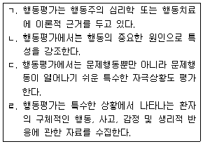
- ㄱ, ㄷ
- ㄱ, ㄴ, ㄹ
- ㄱ, ㄷ, ㄹ
- ㄴ, ㄷ, ㄹ
(정답률: 72%)
70. 뇌의 편측화 효과를 측정할 수 있는 대표적 방법은?
- 미로검사
- 이원청취기법
- Wechsler 기억검사
- 성격검사
(정답률: 71%)
71. 정신상태검사(mental status examination)에서 파악하는 항목과 가장 거리가 먼 것은?
- 감각기능 : 의식상태, 주의력, 기억력 등
- 인지기능 : 내담자의 치료 동기의 파악
- 지각장애 : 착각, 환각의 유무 등
- 지남력 : 시간, 장소, 사람 지남력
(정답률: 67%)
72. 다음 ( )에 알맞은 방어기제는?
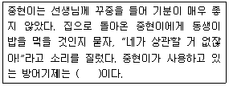
- 행동화
- 투사
- 전위
- 동일시
(정답률: 68%)
73. Bergan과 Kratochwill은 임상심리사의 자문과 관련하여 10가지 자문 모형을 밝히고, 자문 과정을 5가지 핵심 문제로 분류하였는데, 다음 중 핵심문제가 아닌 것은?
- 자문가의 책임
- 목표
- 초기 면담
- 지식 기반
(정답률: 46%)
74. 골수 이식을 받아야 하는 아동에게 불안과 고통에 대처하도록 돕기 위하여 교육용 비디오를 보게 하는 치료법은?
- 유관관리 기법
- 역조건형성
- 행동시연을 통한 노출
- 사회학습법
(정답률: 57%)
75. 아동기에 기원을 둔 무의식적인 심리적 갈등에서 이상행동이 비롯된다고 가정한 조망은?
- 행동적 조망
- 인지적 조망
- 대인관계적 조망
- 정신역동적 조망
(정답률: 84%)
76. 행동의학에서 주로 다루는 주제로 가장 적합한 것은?
- 공황발작
- 외상 후 스트레스 장애
- 정신분열병의 음성증상
- 만성통증 관리
(정답률: 51%)
77. 주로 과음, 흡연, 노출증 등의 문제를 해결하기 위해 활용되어지는 치료적 접근법은?
- 정신분석
- 체계적 둔감법
- 혐오치료
- 명상치료
(정답률: 84%)
78. 행동치료에 관한 설명으로 틀린 것은?
- 평가와 치료가 직접적으로 연관된다.
- 문제 행동의 기저 원인에 중요성을 둔다.
- 모든 사례에 동일한 기법을 적용하기보다는 개별화된 평가와 개입을 한다.
- 평가의 치료 절차가 구체적이고 분명하다.
(정답률: 64%)
79. 자신의 초기 경험이 타인에 대한 확장된 인식과 관계를 맺는다는 가정을 강조하는 치료적 접근은?
- 대상관계이론
- 자기심리학
- 심리사회적 발달이론
- 인본주의
(정답률: 73%)
80. 생물학적 조망에 대한 설명과 가장 거리가 먼 것은?
- 행동과 기질적 기능간의 상호작용에 초점을 맞추고 있다.
- 마음과 몸은 하나의 복잡한 실체의 두 측면이다.
- 심리적인 스트레스와 신체적인 질병은 서로 영향을 미치는 경우가 거의 없다.
- 관찰 가능한 표현형은 그 사람의 유전인자와 연관된 경험의 산물이다.
(정답률: 80%)
5과목: 심리상담
81. 인지행동상담에서 사용하는 스트레스 접종방법이 아닌 것은?
- 재구조화 연습
- 이완훈련
- 심호흡 연습
- 인지 재교육
(정답률: 41%)
82. 접촉, 지금-여기, 자각과 책임감 등을 중시하는 치료이론은?
- 인간중심적 치료
- 게슈탈트 치료
- 정신분석
- 실존치료
(정답률: 79%)
83. 사회공포증 극복을 위한 집단치료 프로그램에서, 불안을 유발하기 때문에 지금까지 피해왔던 상황을 더 이상 회피하지 않고 그 상황에 직면하게 하는 일종의 행동치료기법은?
- 노출훈련
- 역할연기
- 자동적 사고의 인지재구성 훈련
- 역기능적 신념에 대한 인지재구성 훈련
(정답률: 75%)
84. 도박중독에 관한 설명으로 가장 적합한 것은?
- 원하는 흥분을 얻기 위해 액수를 낮추면서 도박을 한다.
- 정상적인 사회생활에는 큰 지장이 없다.
- 도박을 중단하면 금단증상이 나타나며, 심하면 자살을 초래한다.
- 도시보다 시골지역에 많으며, 평생 유병률은 5% 정도로 보고되고 있다.
(정답률: 70%)
85. 심리재활 프로그램인 집단치료가 가지는 장점과 가장 거리가 먼 것은?
- 다른 집단 구성원에게 도움을 준다는 만족감을 경험할 수 있다.
- 효과적인 대화기술을 익히는 기회가 된다.
- 고민하는 비슷한 문제들에 대해 다양한 해결책을 살펴볼 수 있다.
- 항상 참여할 수 있고 자유롭게 다른 일정과 병행할 수 있다.
(정답률: 69%)
86. 집단상담에 대한 설명으로 가장 적합한 것은?
- 집단 크기, 기간, 집단성격, 프로그램 등을 미리 결정해야 한다.
- 집단상담에서는 개인상담에 있는 접수면접과 같은 단계는 생략된다.
- 집단상담에서 상담자는 조언을 사용해서는 안 된다.
- 만성적 우울증을 가진 내담자로 이루어진 집단은 자조집단에 어울린다.
(정답률: 81%)
87. 교류분석상담에서 성격이나 일련의 교류들을 자아상태 모델의 관점에서 분석하는 것은?
- 구조분석
- 기능분석
- 교류패턴분석
- 각본분석
(정답률: 48%)
88. Glasser의 현실요법 상담이론에서 가정하는 기본적인 욕구가 아닌 것은?
- 생존의 욕구
- 권력에 대한 욕구
- 자존감의 욕구
- 재미에 대한 욕구
(정답률: 48%)
89. 다음 상담치료에서 사용된 상담 기술은?
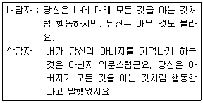
- 재진술
- 직면
- 해석
- 감정반영
(정답률: 55%)
90. 성폭력 피해자와의 상담에 대한 설명으로 틀린 것은?
- 상담자는 내담자가 성에 대해 무지하다는 가정을 갖고 상담을 시작하면 관계형성에 어려움이 생긴다.
- 상담자는 피해자가 취해야 할 역할행동을 검토함으로써 필요한 대인관계를 익히도록 돕는다.
- 먼저 내담자 스스로 자기 패배적 사고방식과 언어표현을 깨닫게 해주는 것이 중요하다.
- 강간피해자들을 위한 상담의 첫 단계 목표는 신뢰적 관계 형성, 우선적 관심사 처리, 지속적 상담 준비이다.
(정답률: 54%)
91. 현대 상담에 대한 접근과 가장 거리가 먼 것은?
- 다소 복잡하고, 역사적이고 이론적인 시야 등 이 분야의 종합적인 통찰을 얻어야 한다.
- 상담 접근 방식들의 주된, 공통된, 효과적인 요소가 무엇일지에 대해 생각해야 한다.
- 통합적인 상담 방식보다 특정 상담 방식을 고수해야 한다.
- 상담 접근 방식들 간의 핵심적인 차이에 대해 논의해야 한다.
(정답률: 85%)
92. 전화상담이 가장 효과적인 경우는?
- 심한 정신질환이 있는 경우
- 만성적인 문제가 있는 경우
- 스스로 문제를 해결할 능력이 없는 경우
- 남과 얼굴대하기를 꺼려하는 경우
(정답률: 82%)
93. 인간중심치료 이론에서 치료자가 취해야 할 태도로 가장 적합한 것은?
- 저항의 분석
- 체험에의 개방
- 솔직성
- 무조건적인 반영
(정답률: 64%)
94. 상담자가 상담과 관련하여 내담자에게 제공해야 할 정보와 가장 거리가 먼 것은?
- 상담시간과 요금
- 상담자의 특성과 훈련
- 상담을 거부할 수 있는 권리
- 비밀보장의 한계
(정답률: 73%)
95. 게슈탈트 상담에 대한 중요한 비판점으로 가장 적합한 것은?
- 성격의 인지적 측면을 무시한다.
- 내담자의 삶을 무시하거나 가치를 떨어뜨릴 수 있다.
- 자신들의 사고를 강요할 수도 있다.
- 내담자가 심리적 손상을 입을 가능성이 많다.
(정답률: 59%)
96. 진로상담의 일반적인 원리와 가장 거리가 먼 것은?
- 만성적인 미결정자의 조기발견에 특히 유념해야 한다.
- 경우에 따라서는 심리상담을 병행하면 더욱 효율적이다.
- 최종결정과 선택은 상담자가 분명하게 정해주어야 한다.
- 내담자에 대한 기본적인 신뢰와 공감적 이해는 진로상담에서도 중요하다.
(정답률: 81%)
97. 상담 초기 단계에서 사용하기에 가장 적합한 기법은?
- 경 청
- 자기개방
- 피드백
- 감정의 반영
(정답률: 68%)
98. 집단상담에서 집단응집력에 관한 설명으로 틀린 것은?
- 응집력이 높은 집단은 자기개방을 많이 한다.
- 응집력은 집단상담의 성공에 매우 중요한 요소가 된다.
- 응집력이 낮은 집단은 지금-여기에서의 사건이나 일에 초점을 맞춘다.
- 응집력이 높은 집안은 집단의 규범이나 규칙을 지키지 않는 다른 집단원을 제지한다.
(정답률: 67%)
99. 내담자로 하여금 예상되는 불안과 공포를 의도적으로 익살을 섞어 과장해서 생각하고 표현하도록 하는 상담기법은?
- 비합리적 사고의 교정
- 역설적 의도
- 역할연기
- 자기표현훈련
(정답률: 77%)
100. 다음 중 인지적 결정론에 따른 치료적 접근과 입장이 다른 하나는?
- 합리적 정서치료
- 점진적 이완훈련
- 인지치료
- 자기교습 훈련
(정답률: 51%)